Growing up can be a bumpy road, and it’s no exception for Riley, who is uprooted from her Midwest life when her father starts a new job in San Francisco. Like all of us, Riley is guided by her emotions – Joy, Fear, Anger, Disgust and Sadness. The emotions live in Headquarters, the control center inside Riley’s mind, where they help advise her through everyday life. As Riley and her emotions struggle to adjust to a new life in San Francisco, turmoil ensues in Headquarters. Although Joy, Riley’s main and most important emotion, tries to keep things positive, the emotions conflict on how best to navigate a new city, house and school.
Joy’s goal has always been to make sure Riley stays happy. She is lighthearted, optimistic and determined to find the fun in every situation. Joy sees challenges in Riley’s life as opportunities, and the less happy moments as hiccups on the way back to something great. As long as Riley is happy, so is Joy.
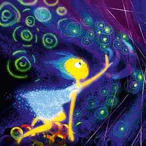

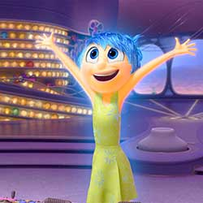
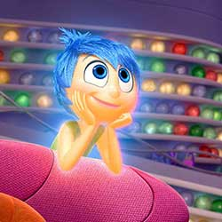
None of the other Emotions really understand what Sadness’s role is. Sadness would love to be more optimistic and helpful in keeping Riley happy, but she finds it so hard to be positive. Sometimes it seems like the best thing to do is just lie on the floor and have a good cry.

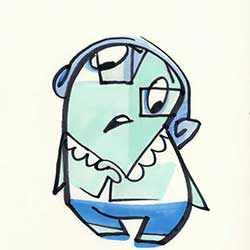
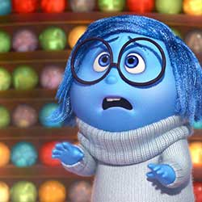
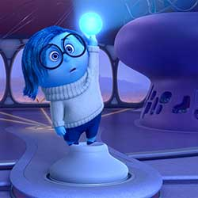
Anger feels very passionately about making sure things are fair for Riley. He has a fiery spirit and tends to explode (literally) when things don’t go as planned. He is quick to overreact and has little patience for life’s imperfections.
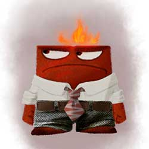
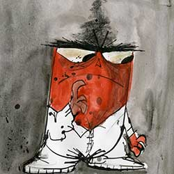
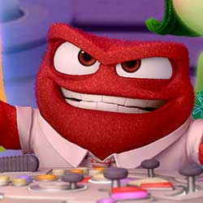
Disgust is highly opinionated, extremely honest and prevents Riley from getting poisoned – both physically and socially. She keeps a careful eye on the people, places and things that Riley comes into contact with – whether that’s broccoli or last year’s fashion trend. Disgust always has the best of intentions and refuses to lower her standards.

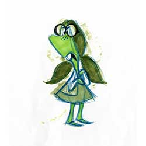


Fear’s main job is to protect Riley and keep her safe. He is constantly on the lookout for potential disasters, and spends time evaluating the possible dangers, pitfalls and risk involved in Riley’s everyday activities. There are very few activities and events that Fear does not find to be dangerous and possibly fatal.
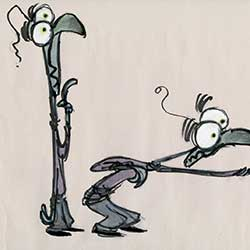
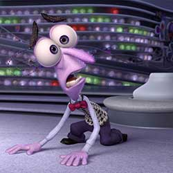
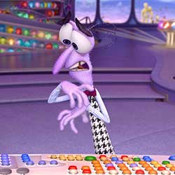
Riley Andersen is an eternally happy kid, at least until she turns eleven and her dad gets a job across the country, forcing the family to relocate to San Francisco. As she struggles to navigate a new home and school, Riley experiences an unfamiliar mix of emotions.


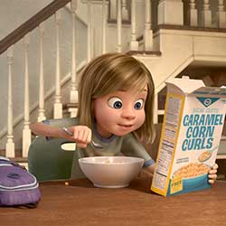

With the trunk of an elephant, the tail of a cat, and body of cotton candy, Bing Bong is Riley’s imaginary friend. (You have to remember, when Riley was three animals were all the rage.) Unfortunately, he’s been out of work since Riley turned four, and he’s desperate to not be left behind as Riley grows up.
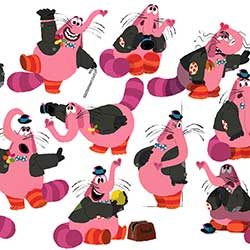
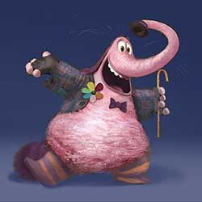
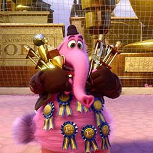

Headquarters is the control center in Riley’s mind where all five Emotions live and work, monitoring Riley’s day-to-day experiences and guiding her along the way.
Built and staffed like a full-fledged Hollywood studio, Dream Productions is where Riley’s dreams (and nightmares) are created. The writers here are not afraid to take risks and often dance on the edge of logic when it comes to Riley’s dreams.
“Imagination Land is where all of Riley’s flights of fancy and daydreams are built full-size and come to life,” says Docter. “It’s a place where you go to play.”
Riley’s Islands of Personality are powered by core memories, which are memories of extremely significant times in Riley’s life.
The Train of Thought is an all-terrain choo-choo with a self-generating track that delivers daydreams, ideas and other thoughts to Headquarters. It’s also used to transfer memories to different regions of Riley’s mind. But take note: When Riley sleeps, so do the operators.
Long Term Memory is a vast floor-to-very-high-ceiling storage facility that houses millions of Riley’s memories. Long Term Memory is staffed by Mind Workers, including the Forgetters, who evaluate the usefulness of each memory and eliminate those that no longer seem relevant.
DIRECTED BY PETE DOCTER
CO-DIRECTED BY RONNIE DEL CARMEN
PRODUCED BY JONAS RIVERA, P.G.A.
EXECUTIVE PRODUCER
JOHN LASSETER
ANDREW STANTON
ASSOCIATE PRODUCER MARK NIELSEN
STORY BY PETE DOCTER, RONNIE DEL CARMEN
SCREENPLAY BY PETE DOCTER, MEG LEFAUVE, JOSH COOLEY
ORIGINAL SCORE COMPOSED BY MICHAEL GIACCHINO
STORY SUPERVISOR JOSH COOLEY
FILM EDITOR KEVIN NOLTING, A.C.E
PRODUCTION DESIGNER RALPH EGGLESTON
SUPERVISING TECHNICAL DIRECTOR MICHAEL FONG
PRODUCTION MANAGER DANA MURRAY
SUPERVISING ANIMATORS SHAWN KRAUSE, VICTOR NAVONE
DIRECTOR OF PHOTOGRAPHY-CAMERA PATRICK LIN
DIRECTOR OF PHOTOGRAPHY-LIGHTING KIM WHITE
CHARACTER SUPERVISOR SAJAN SKARIA
SETS SUPERVISOR ROBERT MOYER
SIMULATION SUPERVISOR EDWIN CHANG
EFFECTS SUPERVISOR GARY BRUINS
CHARACTER ART DIRECTOR ALBERT LOZANO
SHADING ART DIRECTOR BERT BERRY
GLOBAL TECHNOLOGY SUPERVISOR WILLIAM REEVES
RENDERING SUPERVISOR ALEXANDER KOLLIOPOULOS
SOUND DESIGNER REN KLYCE
CASTING
KEVIN REHER, C.S.A.
NATALIE LYON, C.S.A.
JOY AMY POEHLER
SADNESS PHYLLIS SMITH
BING BONG RICHARD KIND
FEAR BILL HADER
ANGER LEWIS BLACK
DISGUST MINDY KALING
NASH A.J. BUCKLEY
RILEY ANDERSEN KAITLYN DIAS
MOM DIANE LANE
DAD KYLE MACLACHLAN